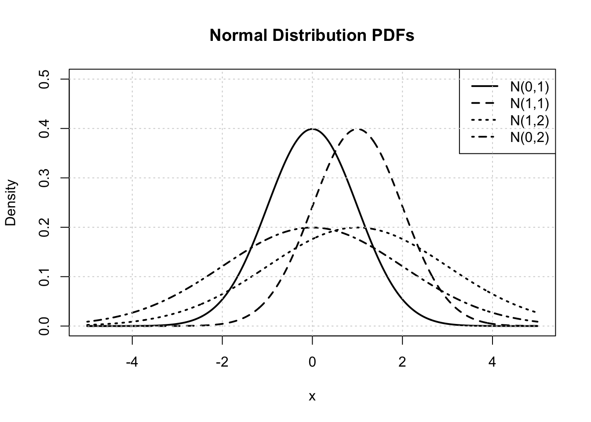
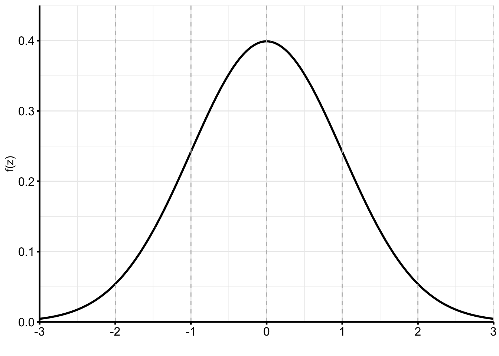
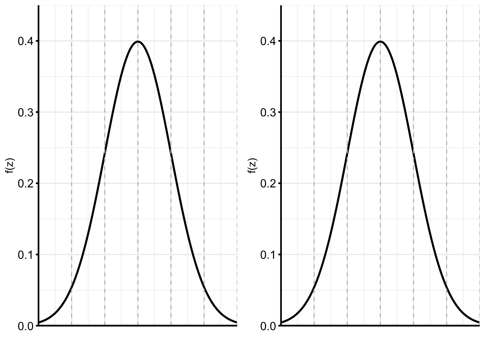
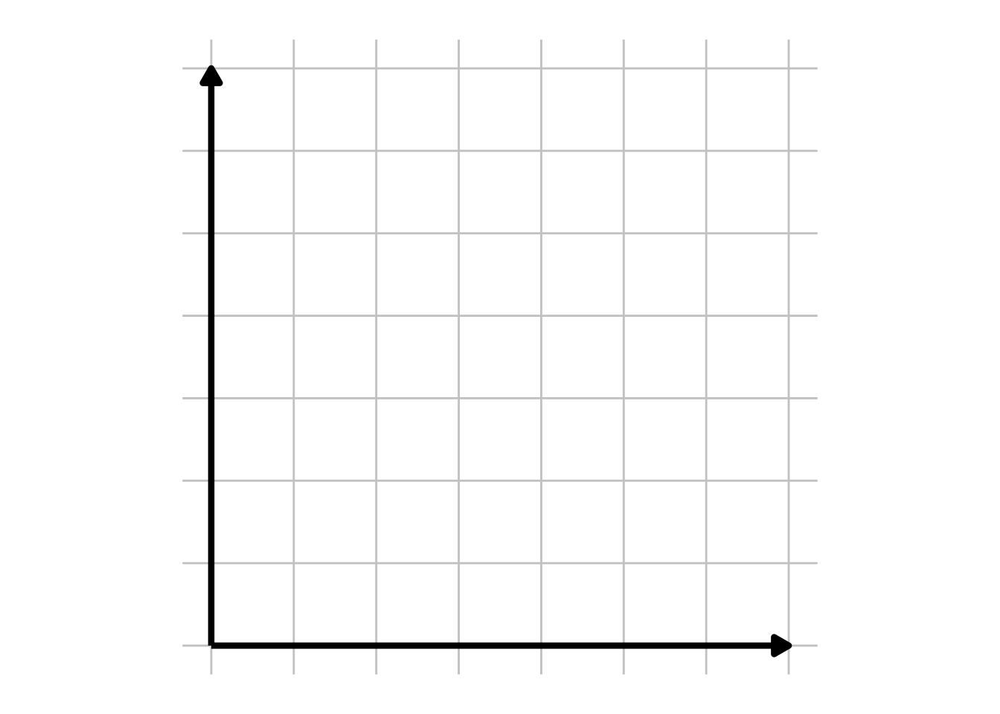
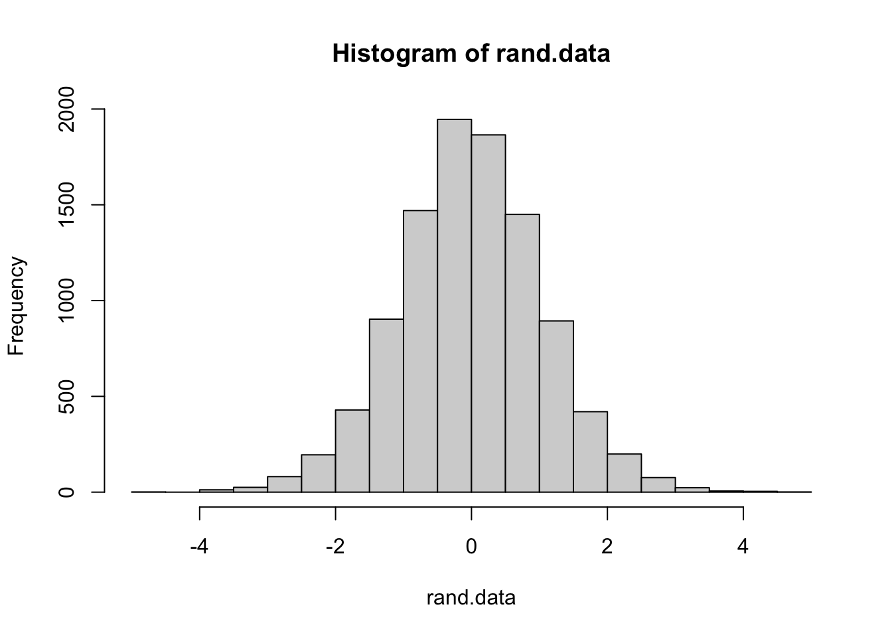

Chapter 4 Continuous Random Variables
In this chapter, we will explore continuous random variables, which are types of random variables that can take any value within an uncountable set, such as an interval or a combination of intervals. We will also delve into some of the most commonly encountered continuous random variables, with a particular focus on the Normal distribution.
A continuous random variable is a random variable whose possible values either constitute an interval of real numbers or a union of intervals of real numbers.
4.1 Probability Density Function (pdf)
Definition 4.1 Let \(X\) be a continuous random variable. The probability distribution or probability density function (pdf) of \(X\) is a function \(f(x)\) such that for any two numbers a and b with \(a \le b\), \(P(a \le X \le b) = \int_a^b f(x) dx\).
Note: All valid pdfs must satisfy two conditions:
(1) \(f(x) \geq 0\) (\(f(x)\) is non-negative).
(2) \(\int_{-\infty}^\infty f(x) dx = 1\) (area under \(f(x)\) is equal to 1)
Example 4.1 Let \(X\) be the IQ of a randomly chosen individual which follow a normal distribution with mean 100 and standard deviation 15.
Example 4.2 Let \(Y\) be a random real number between 0 and 1. (Note: this can be done approximately in R using the function.)
Example 4.3 Suppose \(X\) is a random variable with the following pdf:
\(f(x) = \begin{cases} 0 & x < 0 \\ \frac{x}{2} & 0 \le x \le 2 \\ 0 & x > 2\\ \end{cases}\)
- Is \(f(x)\) a valid pdf?
- What is \(P(X < 1)\)?
- What is \(P(1/2 \le X \le 3/2)\)?

- What is \(P(X=1)\)?

Caution! For a continuous random variable \(X\), \(P(X=c)=0\) for all constants \(c\). While it may be possible for \(X\) to be exactly equal to the constant \(c\), it can only happen with probability zero. In general, when dealing with continuous random variables, we consider the probability that \(X\) takes on a value over an interval rather than a specific value.
4.2 Cumulative Distribution Functions
Definition 4.2 The cumulative distribution function (CDF) of a continuous random variable \(X\) is defined for every number \(x\) by \(F(x) = P(X \le x) = \int_{-\infty}^x f(y) dy\). F(x) represents the area under the curve to the left of \(x\).
Note: Conditions on \(F(x)\):
- \(0 \le F(x) \le 1\)
- \(\lim_{x \to -\infty} F(x) = 0\)
- \(\lim_{x \to \infty} F(x) = 1\)
Theorem 4.1 If \(X\) is a continuous random variable with pdf \(f(x)\) and CDF \(F(x)\), then at every x at which the derivative \(F'(x)\) exists, \(F'(x) = f(x)\).
Theorem 4.2 Let X be a continuous random variable with pdf \(f(x)\) and CDF \(F(x)\). Then we have the following:
- For any number \(a\), \(P(X>a) = 1-F(a)\)
- For any two numbers \(a\) and \(b\) with \(a \le b\), \(P(a \le X \le b) = F(b) - F(a)\).
Example 4.4 Suppose \(X\) is a random variable with the following pdf:
\(f(x) = \begin{cases} 0 & x < 0 \\ \frac{x}{2} & 0 \le x \le 2 \\ 0 & x > 2\\ \end{cases}\)
- Find the CDF of \(X\) and sketch it.

- Use the CDF to calculate \(P(X \leq 1)\).
4.3 Expected Values
Definition 4.3 The expected value or mean of a continuous random variable \(X\) with pdf \(f(x)\) is: \[ E[X] = \mu = \int_{-\infty}^{\infty} x \cdot f(x) dx\]
Theorem 4.3 If \(X\) is a continuous random variable with pdf \(f(x)\) and \(h(X)\) is any function of \(X\), then: \[E[h(X)] = \int_{-\infty}^{\infty} h(x) \cdot f(x) dx\]
Definition 4.4 The variance of a continuous random variable \(X\) with pdf \(f(x)\) is:
\[Var(X) = \sigma^2 = \int_{-\infty}^{\infty} (x-\mu)^2 \cdot f(x) dx = E[(X-\mu)^2] = E[X^2] -(E[X])^2\]
Definition 4.5 The standard deviation of a continuous random variable \(X\) is: \[SD(X) = \sigma = \sqrt{Var(X)}\]
Theorem 4.4 If \(X\) is a continuous random variable and \(Y=aX+b\), then: \[E[Y]=aE[X]+b \text{ and } Var(Y)=a^2Var(X)\]
Example 4.5 Suppose \(X\) is a random variable with the following pdf:
\(f(x) = \begin{cases} 0 & x < 0 \\ \frac{x}{2} & 0 \le x \le 2 \\ 0 & x > 2\\ \end{cases}\)
Determine \(E[X]\), \(E[X^2]\), \(Var(X)\), \(SD(X)\).
4.4 Normal Distribution
Definition 4.6 A continuous random variable X is said to be Normal(\(\mu\),\(\sigma^2\)) or \(\mathcal{N}(\mu,\sigma^2)\) random variable if the pdf of X is: \[f(x|\mu,\sigma^2) = \frac{1}{\sqrt{2 \pi \sigma^2}} e^{-(x-\mu)^2/(2\sigma^2)}, -\infty < x < \infty\]
If \(X \sim \mathcal{N}(\mu,\sigma^2)\), then \(E[X] = \mu\) and \(Var(X) = \sigma^2\), that is, the expected value is \(\mu\) and the variance is \(\sigma^2\).

Definition 4.7 The normal distribution with parameter values \(\mu=0\) and \(\sigma=1\) is called the standard normal distribution.
Note: \(X \sim \mathcal{N}(\mu, \sigma^2)\), F(x) is denoted \(\Phi(x)\). There is no closed form solution for \(\Phi(x)\) since\ \(\Phi(x) = F(x) = \int_{-\infty}^x \frac{1}{\sqrt{2 \pi \sigma^2}} e^{-(x-\mu)^2/(2\sigma^2)} = (?).\) Instead, we use a table called a standard normal table to assist in these calculations.
Theorem 4.5 If \(X \sim \mathcal{N}(\mu, \sigma^2)\), that is, X is a normal distribution with mean \(\mu\) and standard deviation \(\sigma\), then \(Z = \frac{X-\mu}{\sigma}\) has a standard normal distribution.
Theorem 4.6 If \(Z \sim \mathcal{N}(0,1)\), that is, X is a standard normal distribution, then \(X = \sigma \cdot Z + \mu\) is a normal distribution with mean \(\mu\) and standard deviation \(\sigma\).
Note: This normalization method allows us to calculate probability for any normal distribution using the standard normal table. (This will be covered in an upcoming example.)
Theorem 4.7 The Empirical Rule states that if \(X\) is (approximately) normally distributed then:
- Approximately 68% of the values are within 1 SD of the mean.
- Approximately 95% of the values are within 2 SD of the mean.
- Approximately 99.7% of the values are within 3 SD of the mean.
Example 4.6 Suppose the weights of house cats are approximately normally distributed with mean of 10 pounds and a standard deviation of 3 pounds. Between what two bounds do approximately 95% of house cat weights lie?
Example 4.7 Suppose \(Z \sim \mathcal{N}(0,1)\), that is, \(Z\) is a standard normal distribution. Calculate the following and draw an accompanying picture:
- \(P(Z < 0.68)\)

- \(P(Z \geq -1.21)\)

- \(P(0.43 \le Z < 0.68)\)

- Suppose \(P(Z < c) = 0.89\). Find \(c\).

Example 4.8 Suppose the weights of house cats are approximately normally distributed with mean of 10 pounds and a standard deviation of 3 pounds. Calculate the following and draw an accompanying picture.
- \(P(X<15)\)

- What is the probability that a randomly chosen house cat will weigh between 8 and 12 pounds?

- What is the \(99^{th}\) percentile of house cat weights?
4.5 The Exponential and Uniform Random Variables
Definition 4.8 A continuous random variable X is said to be an Exponential(\(\lambda\)) random variable or an exponential random variable with parameter \(\lambda >0\) if the pmf of X is:
\(f(x|\lambda) = \begin{cases} \lambda e^{-\lambda x} & x \geq 0\\ 0 & otherwise \end{cases}\)
If \(X \sim exp(\lambda)\), then \(E[X] = \frac{1}{\lambda}\) and \(Var(X) = \frac{1}{\lambda^2}\).
Example 4.9 Suppose \(X \sim exp(\lambda)\), find the CDF of X.
Example 4.10 Show that if \(X \sim exp(\lambda)\), then \(E[X] = \frac{1}{\lambda}\). (Note: this requires integration by parts).
4.6 (Continuous) Uniform[a,b] Random Variable
Definition 4.9 A continuous random variable X is said to be Uniform[\(a\),\(b\)] random variable if the pdf of \(X\) is:
\(f(x|a,b) = \begin{cases} \frac{1}{b-a} & a \le x \le b \\ 0 & otherwise \\ \end{cases}\)
If \(X \sim \text{Uniform(}a,b\)) random variable, then \(E[X] = \frac{a+b}{2}\) and \(Var(X) = \frac{(b-a)^2}{12}\).
Example 4.11 Show that if \(X \sim Uniform[a,b]\), then \(E[X] = \frac{a+b}{2}\).
Example 4.12 Suppose your local bus shows up once every 60 minutes, but you don’t have a schedule, so you assume it’s equally likely to show up at any time in the next 60 minutes. Let \(X\) be the amount of time you have to wait for the bus. Sketch the pmf and calculate the probability that your bus shows up in the next 10 minutes.

4.7 R Companion for Chapter 4
Similar to last chapter, we can calculate probabilities for common continuous random variables in R and generate random data according to continuous distributions.
R uses four prefixes to reference difference elements of a random variable. These are:
p for “probability”, the cumulative distribution function (CDF) q for “quantile”, the inverse CDF d for “density”, the probability mass function (PMF) r for “random”, a random variable having the specified distribution
Suffixes for continuous random variables include: norm (normal/Gaussian), exp (exponential), and t (t).
Suppose \(X \sim \mathcal{N}(\mu=100,\sigma=15)\), the distribution often used to model IQ scores. Suppose we want to know the probability of a randomly chosen IQ score below 110.
## [1] 0.7475075In other words, about 75% of IQ scores are less than 110.\
Let’s calculate the probability that a randomly chosen score is above 130. Note that \(P(X>130) = 1 - P(X \leq 130)\).
## [1] 0.02275013In other words, about 2.3% of IQ scores are greater than 130.\
We can also do inverse normal calculations using the prefix q which stands for quantile. Suppose we want to know the 90th percentile of IQ scores. We can calculate this using the qnorm function.
## [1] 119.2233This result shows that the 90th percentile of IQ scores corresponds to an approximate IQ of 119.
In the second half of the course, we will be using the t-distribution frequently when dealing with statistical applications. Let’s generate 10,000 random values for a t-distribution with 20 degrees of freedom, i.e., \(Z \sim t(df=20)\).

Based on the plot above, this distribution is approximately symmetric, bell-shaped, and unimodal.\
Let’s calculate some summary statistics for this data.
## [1] -0.009077007## [1] -0.01514699The mean and median are both approximately equal to zero and since these values are nearly equal, we can confirm that the distribution is approximately symmetric.
Finally, let’s calculate the probability in our simulated data so that \(P(Z>1)\).
## [1] 0.1623Approximately 16% of our randomly generated t-distribution values are greater than 1.